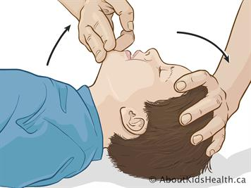
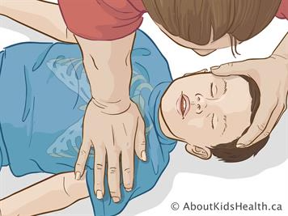
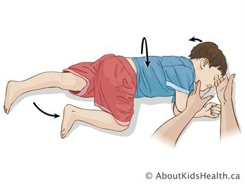
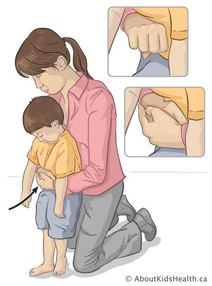
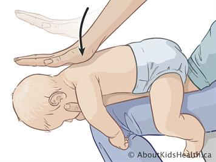
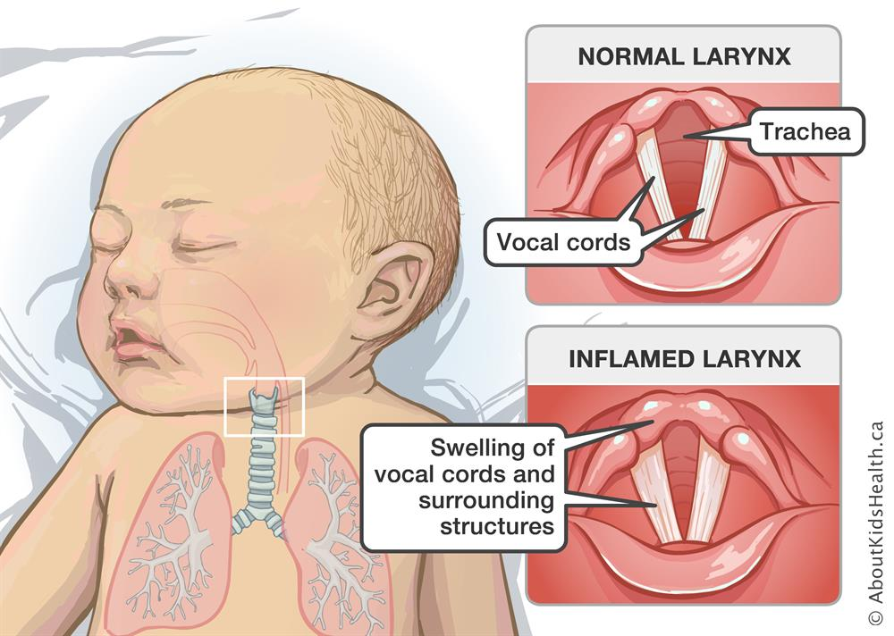
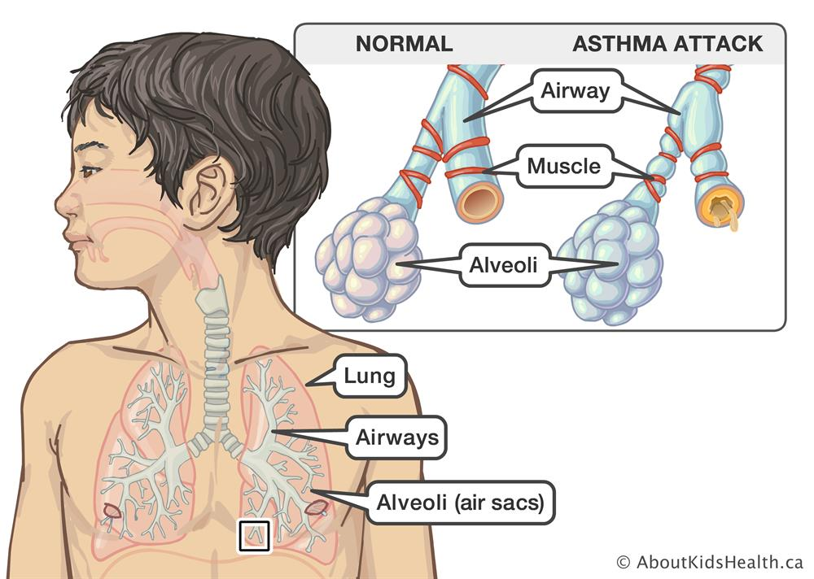
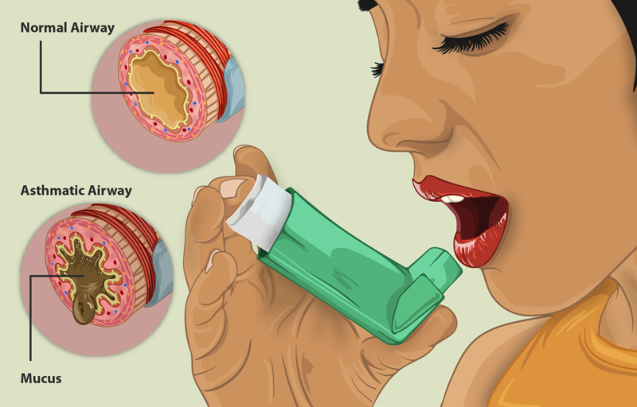
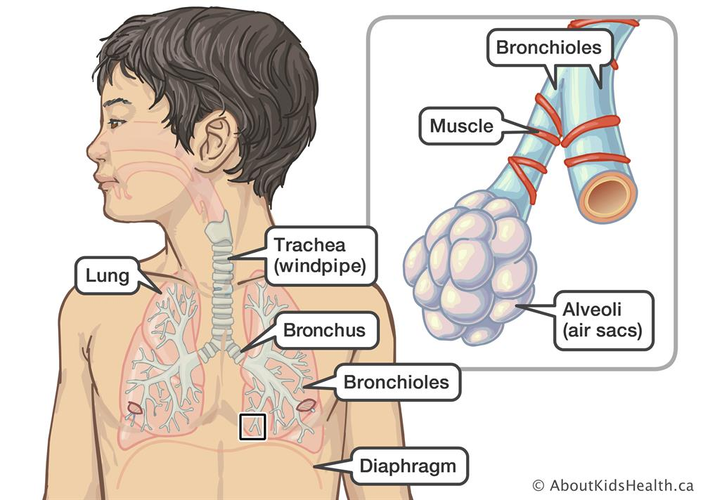
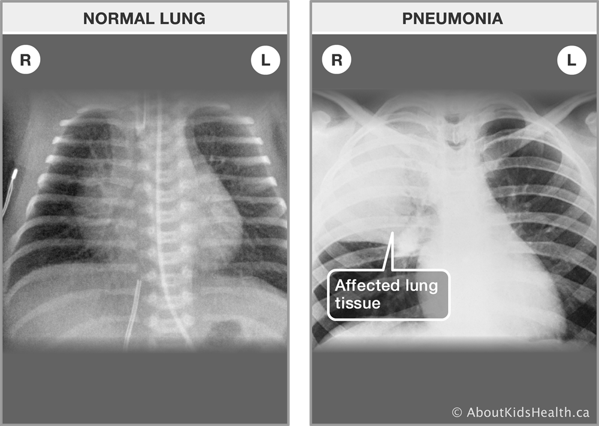

Pediatric CPR



Chest Compressions
Open Airway
Two Rescue Breaths
Repeat
Recovery Position
- Cardiac arrest clinical manifestations: apnea, unresponsiveness, lack of response to verbal or physical stimuli
- Post cardiac arrest pediatric patient
Please see for pediatric airway emergency:
AHA algorithms
Pediatric Airway Obstruction
View full protocol for both upper and lower airway obstruction flowsheets.
View Full ProtocolUpper Airway Obstruction



Abdominal Thrusts (over one year old)
Infant Back Blows (under one year old)
Uricaria Rash During Anaphylaxis
Croup
- Clinical manifestations:
- Barking cough, hoarseness, inspiratory stridor
- Ingestion, gasping, sudden onset of symptoms, drooling
- No spontaneous coughing, absent lung sounds
- Angioedema, urticaria rash
- The patient may have ingested foreign body, had an exposure to an allergen, or have an infection.
Please see for immediate care interventions: Protocol
{kind=link}
Lower Airway Obstruction




Asthma
Asthamic Airway & Nebulizer
Bronchiolitis
Pneumonia
- Clinical manifestations:
- Child is unable to feed well or speak more than 1-2 words at a time; grunting
- High-pitched wheezing
- Severe, multiple retractions; tachypnea
- Persistent coughing
- Increased respiratory effort
- Post-tussive emesis/rhinorrhea/thick sputum
Please see for immediate care interventions: Protocol
{kind=link}
Survey
Please take some time to fill out our post-training survey to help us guage the efficacy of our quality improvement project and identify areas that need improvement in the future.
UCI Sue & Bill Gross
School of Nursing
Berk Hall
802 West Peltason
Irvine CA 92612
(949)-824-1514